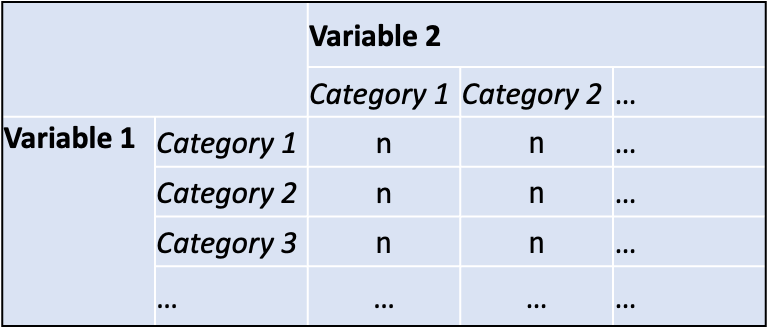
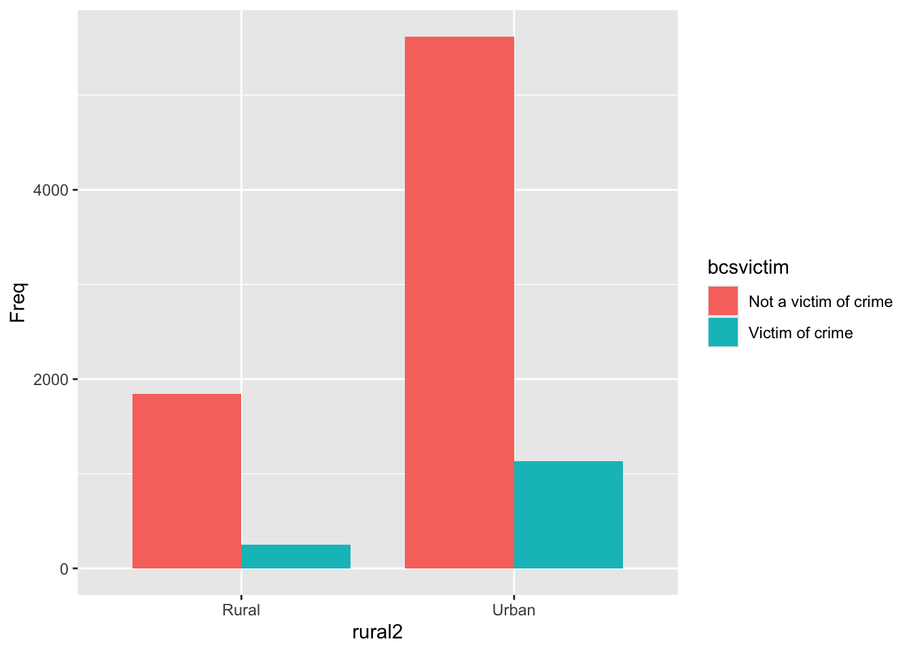
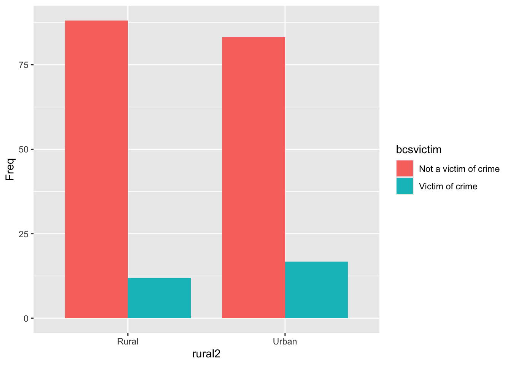
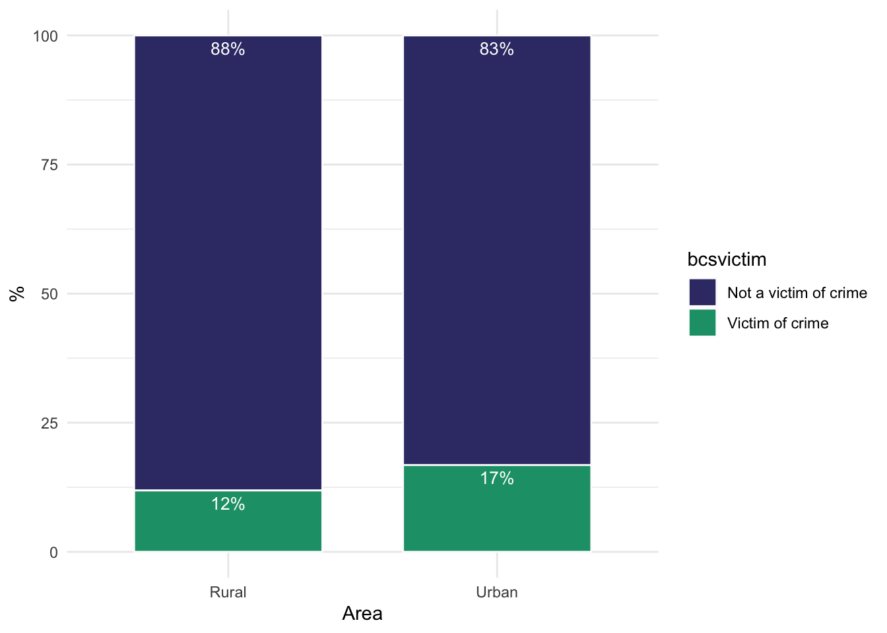

1library(ggplot2)
library(summarytools)
2csew <- read.csv("../Data/KM/csew.csv", stringsAsFactors = TRUE)- 1
-
Load
ggplotandsummarytoolspackages. - 2
-
Import data, assign to object named
csew.
Bivariate analyis with factor variables
Last week we covered descriptive analysis with a single factor (categorical) variable, producing frequency distributions in tables and graphs. This week we will continue exploring the data by now examining the relationship between two factor variables. The two major topics covered this week are:
We will be using the same packages as last week: ggplot2 and summarytools. If using the computers on campus you will need to install these each time you log into the computers and launch RStudio (you only have to do this once if using your own laptop). Copy the code below into the console and hit enter, or into a new code chunk in a R Notebook and run (green triangle).
install.packages(c("ggplot2", "summarytools"))
Once the packaged are installed, you can load them, and then import the data. The code chunk below does this in one block.
A cross-tab, which is short for cross-table, is simply a table structured by one variable in the rows and a second variable in the columns. Figure 1 below shows the basic layout of a cross-tab. The number of rows and columns in a cross-tab will be determined by the number of categories in each factor variable. The most simple cross-tab, where each of the variables has only two categories, will have two rows and two columns. It is common also to report the total numbers for each variable in the rows and columns.

There are, as ever, a number of ways to produce a cross-tab in R. One is to use the in-built (or base) table() function. The code-chunk below shows how to do this.
with() function
table() function: specify the first variable (rows) and the second variable name (columns), separated with a ,. There’s no ‘right’ way of doing this, and sometimes this will be specified in a way that makes the table easy to read. If there are a large number of categories in a variable it can make sense to place this in the rows.
rural2
bcsvictim Rural Urban
Not a victim of crime 1840 5620
Victim of crime 248 1135The results in the cross-tab above show the number of people who have been/have not been a victim of crime in rural and urban areas. It is easy to misinterpret this table, however, as the total number of people living in urban areas substantially outnumbers those living in rural areas. More people are, therefore, a victim of crime in urban areas simply because more people live in urban areas. The imbalance is not a problem. In fact, it reflects the population distribution so it is reassuring.
Bearing this in mind, it would be optimal to produce a table showing the percentages of people in different areas who are a victim of crime. We can do this using further in-built (base) functions in R, but the code is a little involved (see below). Alternatively, we can use one of a number of user-written functions that produce complete cross-tab results. Here we will use the ctable() function as part of the summarytools package we installed and loaded a the outset of this session. The code-chunk below shows how to implement this function to produce a cross-tab sample numbers and proportions.
The results in the cross-tab show that the proportion of people who reported being a victim of crime in the previous 12 months was 11.9% for those living in rural areas and 16.8% for those living in urban areas. The overall proportion who were a victim of crime was 15.6% (which we knew from last week).
with(csew,
ctable(bcsvictim, rural2, prop='c'))Cross-Tabulation, Column Proportions
bcsvictim * rural2
Data Frame: csew
----------------------- -------- --------------- --------------- ---------------
rural2 Rural Urban Total
bcsvictim
Not a victim of crime 1840 ( 88.1%) 5620 ( 83.2%) 7460 ( 84.4%)
Victim of crime 248 ( 11.9%) 1135 ( 16.8%) 1383 ( 15.6%)
Total 2088 (100.0%) 6755 (100.0%) 8843 (100.0%)
----------------------- -------- --------------- --------------- ---------------The code in the above code-chunk is very similar to the code used to produce the simple cross-tab above.
with(csew, as always clearly specify what data set you are working withctable() function, entering in the brackets the row variable first, followed by the column (group) variable separated by a ,.prop='c' this part of the code specifies that we want to report column (‘c’) proportions, because we have placed the groups we are comparing in the columns.The code-chunk below re-runs the cross-tab produced above. The code is identical to that run above apart from the addition of chisq = TRUE which is separated from the prior code with a ,. The code re-produces the cross-tab results along with a chi-square test statistic (28.9505) and a p.value (0). The zero here is not exactly zero but a number that is so small it can safely be rounded to zero. For the purposes of interpretation, it is clear that this p-value is below our critical threshold of 0.05. We can go further in fact and conclude that it is lower than 0.001.
with(csew,
ctable(bcsvictim, rural2, prop = 'c', chisq = TRUE))Cross-Tabulation, Column Proportions
bcsvictim * rural2
Data Frame: csew
----------------------- -------- --------------- --------------- ---------------
rural2 Rural Urban Total
bcsvictim
Not a victim of crime 1840 ( 88.1%) 5620 ( 83.2%) 7460 ( 84.4%)
Victim of crime 248 ( 11.9%) 1135 ( 16.8%) 1383 ( 15.6%)
Total 2088 (100.0%) 6755 (100.0%) 8843 (100.0%)
----------------------- -------- --------------- --------------- ---------------
----------------------------
Chi.squared df p.value
------------- ---- ---------
28.9505 1 0
----------------------------with(csew, table(bcsvictim, rural2)) rural2
bcsvictim Rural Urban
Not a victim of crime 1840 5620
Victim of crime 248 1135with(csew, addmargins(table(bcsvictim, rural2), c(1,2))) rural2
bcsvictim Rural Urban Sum
Not a victim of crime 1840 5620 7460
Victim of crime 248 1135 1383
Sum 2088 6755 8843with(csew, prop.table(table(bcsvictim, rural2), 2)) rural2
bcsvictim Rural Urban
Not a victim of crime 0.8812261 0.8319763
Victim of crime 0.1187739 0.1680237with(csew, prop.table(table(bcsvictim, rural2), 2)*100) rural2
bcsvictim Rural Urban
Not a victim of crime 88.12261 83.19763
Victim of crime 11.87739 16.80237#chi-square test
with(csew,
chisq.test(table(bcsvictim, rural2)))
Pearson's Chi-squared test with Yates' continuity correction
data: table(bcsvictim, rural2)
X-squared = 28.95, df = 1, p-value = 7.425e-08Data visualization starts to get more interesting when you want to show data from two (or more) variables, but there is a little bit more work to do to prepare the data that you want to graph. In brief, we need first to create a table containing the information we want to graph, which we then input directly into the function producing the graphs.
The layout of the data table must be such that the numbers we want to visualize are contained in a single column. The code-chunk below re-produces the simple cross-tab from above, but this time we assign it to an object called tab1. We can think of an object here as a name we give to some output we have produced. We can then use that output in other code by referring to the name. If we want to output the table we type the name of the object it is stored in, as shown in the code-chunk below.
tab1 <- with(csew,
table(bcsvictim, rural2))
tab1 rural2
bcsvictim Rural Urban
Not a victim of crime 1840 5620
Victim of crime 248 1135The code-chunk below restructures the table stored as tab1 as a data frame such that the numbers are all in a single column. To keep track of the steps, this is assigned to a new object called tab2. Take some time to look at the difference (and similarity) between tab1 and tab2. The code to produce a graphs prefers data organised like tab2.
tab2 <- as.data.frame(tab1)
tab2 bcsvictim rural2 Freq
1 Not a victim of crime Rural 1840
2 Victim of crime Rural 248
3 Not a victim of crime Urban 5620
4 Victim of crime Urban 1135In the code chunk below we create our data visualization. This is a bar graph showing the number of people in rural and urban areas who have not been a victim of crime and who have been a victim of crime. The number of people is shown on the vertical y-axis. Area is shown at the bottom of the graph on the horizontal x-axis, and whether a person has been a victim of crime is distinguished using bar colour.
ggplot(tab2,
aes(x = rural2, y = Freq, fill = bcsvictim)) +
geom_col(position = position_dodge(), width=0.8)
As discussed above, looking at the absolute sample numbers can be misleading given that most people live in urban areas. In the same way that it was useful to consider percentages within area in the cross-tab analysis, it is useful to show percentages in a data visualization. As with the prior data visualization, the first step is to create the data table used to make the visualization. The
tab1p <- with(csew,
prop.table(tab1, 2)*100)
tab2p <- as.data.frame(tab1p)
tab2p bcsvictim rural2 Freq
1 Not a victim of crime Rural 88.12261
2 Victim of crime Rural 11.87739
3 Not a victim of crime Urban 83.19763
4 Victim of crime Urban 16.80237Now we use this data table to make a visualization of the proportions (prop). The code-chunk below does this. Note that the only thing that has changes in the code is the name of the variable being assigned to the horizontal y-axis.
ggplot(tab2p,
aes(x = rural2, y = Freq, fill = bcsvictim)) +
geom_col(position = position_dodge(), width=0.8)
The default graphs are not the most visually appealing, but there is much scope to tweak graphs to make them look better. Here we re-run the code to make the graph, but we stack the bars on top of one another, change labels for axes, colours, and remove background colour.
ggplot(tab2p,
aes(x = rural2, y = Freq, fill = bcsvictim)) +
geom_col(position = 'stack', width=0.7, colour='#FDFDFD', lwd=0.5) +
labs(y = '%', x = 'Area') +
scale_fill_manual(values = c('#393975', '#1b9e77')) +
theme_minimal()Colour is an important element in data visualization. There are a number of important
And here we add value labels
ggplot(tab2p, aes(x = rural2, y = Freq, fill = bcsvictim)) +
geom_col(position = 'stack', width=0.7, colour='#FDFDFD', lwd=0.5) +
labs(y = '%', x = 'Area') +
scale_fill_manual(values = c('#393975', '#1b9e77')) +
geom_text(
aes(label=paste0(round(Freq, 0), "%")),
colour = "white", size = 3.5,
position = 'stack', vjust = 1.5) +
theme_minimal()
library(dplyr)
Attaching package: 'dplyr'The following objects are masked from 'package:stats':
filter, lagThe following objects are masked from 'package:base':
intersect, setdiff, setequal, uniontab1 <- csew %>%
group_by(rural2, bcsvictim) %>%
summarise(
freq = n(), .groups='drop'
)
tab1# A tibble: 4 × 3
rural2 bcsvictim freq
<fct> <fct> <int>
1 Rural Not a victim of crime 1840
2 Rural Victim of crime 248
3 Urban Not a victim of crime 5620
4 Urban Victim of crime 1135tab2 <- tab1 %>%
group_by(rural2) %>%
mutate(
total = sum(freq),
prop = (freq/total)*100
) %>% ungroup()
tab2# A tibble: 4 × 5
rural2 bcsvictim freq total prop
<fct> <fct> <int> <int> <dbl>
1 Rural Not a victim of crime 1840 2088 88.1
2 Rural Victim of crime 248 2088 11.9
3 Urban Not a victim of crime 5620 6755 83.2
4 Urban Victim of crime 1135 6755 16.8